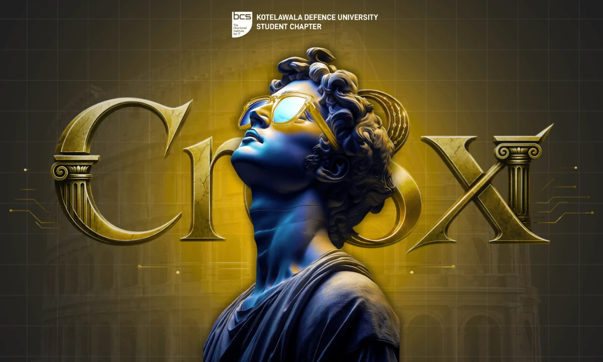

06 / Competition platform · Interactive design
CreateX 3.0.
A cinematic competition website backed by participant registration and organizer workflows.
- Status
- Public website · Platform implementation
- Context
- UI/UX competition experience
- Technology
- Next.js · React · TypeScript · Supabase · PostgreSQL

01 / OVERVIEW
The problem
A competition needs a memorable public identity and practical ways to manage participants, teams, and submissions.
The approach
CreateX combines a scroll-driven visual story with application routes for registration, participant dashboards, and an organizer console. Supabase provides authentication, database access, and storage.
My contribution
Web and platform development represented in my public repository; the competition identity and supplied artwork belong to the event.
02 / SYSTEM FLOW
How it connects
- 01Next.js interface
- 02Validated application routes
- 03Supabase authentication
- 04PostgreSQL + private storage
A simplified overview of the implementation.
03 / ENGINEERING
Inside the implementation
- A public experience organized around a future-focused design journey.
- Solo and team registration flows and participant dashboards.
- Organizer tooling for rounds, eligibility, announcements, and submissions.
- SQL migrations for row-level security and database constraints.
The engineering consideration
Visual storytelling and operational workflows have different needs. The code separates the public experience from registration and administration, with access rules represented in database migrations.
04 / SCOPE & STATUS
What this work demonstrates
The public presentation is live. Repository features describe the implementation, not independently tested end-to-end operation of every organizer workflow or evidence of event adoption.